先纠正误解：微服务到底“微”在哪里？
用一句话给出本章的核心定义。
线索
不是代码行数、团队人数或部署包大小；真正要小的是公共接口暴露的领域知识与复杂度。
微服务真正需要“微”的，不是代码行数、团队人数或部署包大小，而是公共接口。设计目标也不是让每个服务单独看起来最简单，而是在服务内部复杂度和整个系统的集成复杂度之间取得平衡。
2010 年代中期，微服务席卷了软件工程行业。它的初衷，是满足现代系统快速变化、弹性伸缩的需要，并自然适应云计算的分布式特征。许多公司做出战略决策，把单体代码库拆开，希望获得微服务架构带来的灵活性。遗憾的是，其中很多尝试并没有好结果。它们没有得到灵活架构，反而得到了“分布式大泥球”——比原本想拆掉的单体更加脆弱、黏连和昂贵。
从历史上看，微服务经常与领域驱动设计联系在一起，尤其是限界上下文模式。许多人甚至把“限界上下文”和“微服务”当作可以互换的说法。但它们真的是一回事吗？本章将探索 DDD 方法论与微服务架构模式的关系。你会看到二者如何相互作用，更重要的是，怎样借助 DDD 设计有效的微服务系统。
先从最基本的问题开始：服务和微服务究竟是什么？
按照 OASIS 的定义，服务是一种通过规定接口提供一个或多个能力访问机制。1 规定接口可以是任何让数据进入或离开服务的机制：既可以是请求—响应这样的同步方式，也可以是生产和消费事件这样的异步方式。这就是服务的公共接口，如图 14-1 所示，它提供了与其他系统组件沟通和集成的途径。
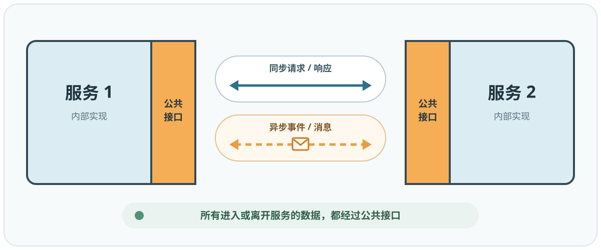
Randy Shoup 把服务接口比作“前门”。所有进入或离开服务的数据都必须通过这扇前门。进一步说，服务的公共接口定义了服务本身，也就是它向外暴露的功能。一个表达清楚的接口，足以描述服务实现了什么功能。例如，图 14-2 中的公共接口明确说明了该服务提供的能力。
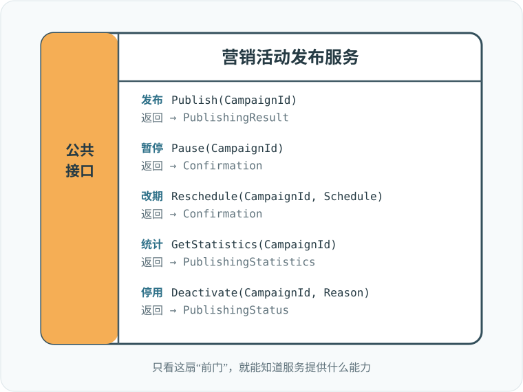
这就把我们带到了微服务的定义。
微服务的定义出乎意料地简单。既然服务由公共接口定义，那么微服务就是拥有“微型公共接口”的服务，也就是只有一扇很小的前门。
微型公共接口更容易让人理解单个服务的功能，以及它与其他系统组件的集成方式。减少服务功能，也会限制它发生变化的理由，使服务在开发、管理和伸缩方面更加自治。
这也解释了为什么微服务不应暴露自己的数据库。把数据库暴露出去，使它成为服务前门的一部分，会让公共接口变得极其庞大。比如，对关系数据库究竟可以执行多少种 SQL 查询？SQL 是一种相当灵活的语言，合理估计大概是“无限多”。因此，微服务要封装自己的数据库，数据只能通过更紧凑、面向集成的公共接口访问。
说“微服务就是拥有微型公共接口的服务”看似简单，却容易产生误导：好像只要把服务接口限制成一个方法，就能得到完美微服务。下面看看把这种幼稚拆分真正用到系统里，会发生什么。
考虑图 14-3 中的待办项管理服务。它的公共接口有 8 个方法，我们打算应用“每个服务只保留一个方法”的规则。
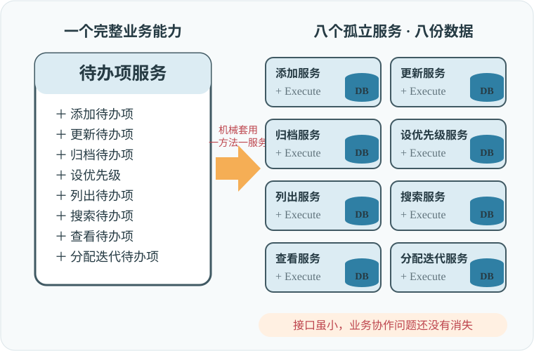
既然这些都是“行为良好”的微服务，每个服务都封装自己的数据库。任何服务都不能直接访问另一个服务的数据库，只能通过对方的公共接口。但当前接口并不支持服务之间的协作。它们必须共同工作，并同步各自造成的数据变化。结果，我们不得不扩展每个服务的接口，加入处理集成问题的方法。把这些服务之间的集成和数据流画出来，最终会像图 14-4 一样，成为典型的分布式大泥球。
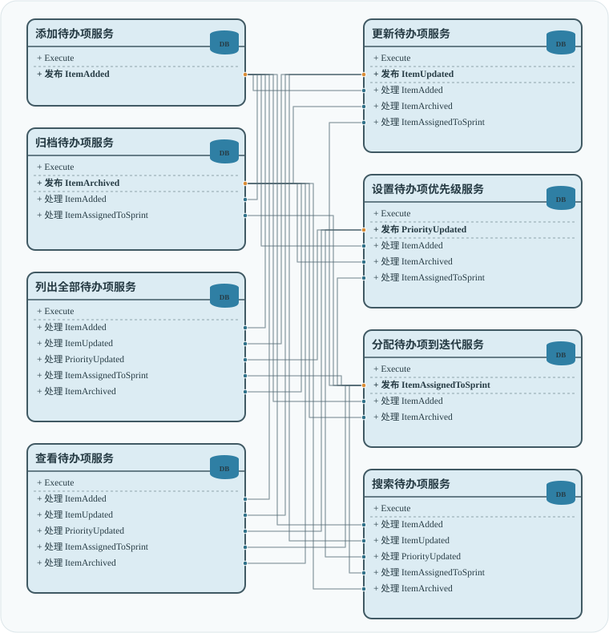
沿用 Randy Shoup 的比喻，把系统拆成如此细粒度的服务以后，我们确实缩小了每个服务的“前门”。然而，为了实现整个系统的功能，又不得不给每个服务加上巨大的“仅限员工”入口。这个例子能告诉我们什么？
“每个服务只暴露一个方法”这条简单拆分启发式之所以次优，有很多原因。第一，它根本做不到。服务必须协作，因此我们被迫给公共接口增加面向集成的方法。第二，我们赢了一场战斗，却输掉了整场战争：每个服务的确比原设计简单得多，但得到的整个系统却复杂了几个数量级。
微服务架构的目标，是产生一个灵活的系统。如果只把设计精力集中在单个组件上，却忽略它与系统其余部分的互动，就违背了“系统”的定义：
因此，系统不可能由彼此完全独立的组件构成。在正确的微服务系统中，无论服务之间解耦得多好，它们仍然必须集成并互相通信。下面看看单个微服务的复杂度与整个系统复杂度如何相互影响。
四十年前，没有云计算，没有全球规模的需求，也不需要每 11.7 秒部署一次系统。但工程师依然需要驯服系统复杂度。尽管当时使用的工具不同，面临的挑战——更重要的是解决思路——今天仍然适用，也可以用来设计微服务系统。
Glenford J. Myers 在《Composite/Structured Design》中讨论了怎样组织过程式代码来降低复杂度。他在第一页就指出：复杂度问题远不止“尽量降低程序每个部分的局部复杂度”；更重要的是全局复杂度，也就是程序或系统整体结构的复杂度——主要部分之间关联或相互依赖的程度。
在我们的语境中，局部复杂度是每个微服务自身的复杂度，全局复杂度则是整个系统的复杂度。局部复杂度取决于服务实现；全局复杂度由服务之间的互动和依赖决定。设计微服务系统时，哪一种复杂度更值得优化？来看两个极端。
把全局复杂度降到最低出奇地容易：消除系统组件之间的一切互动，也就是把所有功能都放进一个单体服务。前面已经看到，这种策略在某些场景中可以工作；在另一些场景中，它会形成可怕的大泥球，局部复杂度可能达到最高。
反过来，如果只优化局部复杂度，却忽略系统全局复杂度，就会得到更加可怕的分布式大泥球。二者关系如图 14-5 所示。
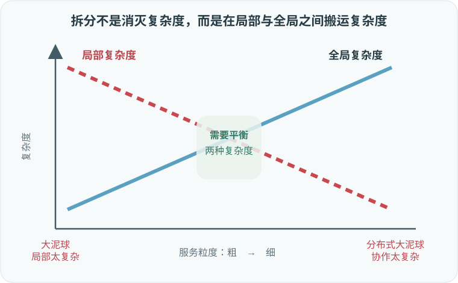
要设计正确的微服务系统，必须同时优化全局复杂度和局部复杂度。把目标设成只优化其中一个，只能得到局部最优；全局最优需要平衡两种复杂度。下面看看“微型公共接口”怎样帮助我们取得这种平衡。
软件系统中的模块——实际上任何系统中的模块——都由功能和逻辑定义。功能是模块应该做什么，也就是它的业务能力；逻辑是模块怎样实现该功能，也就是业务逻辑。
John Ousterhout 在《A Philosophy of Software Design》中讨论了模块化，并提出一个简单而有力的视觉启发式来评估模块设计：深度。
可以把模块想象成矩形，如图 14-6 所示。矩形上边代表模块的功能，也就是公共接口的复杂度。较宽的矩形代表功能范围更广，较窄的矩形代表功能更受限制、公共接口更简单。矩形面积代表模块逻辑，也就是功能实现的复杂度。
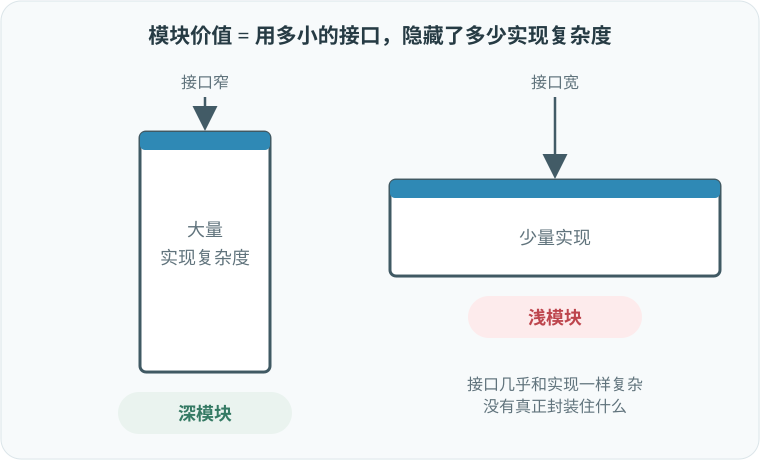
按照这个模型，有效模块是深的：简单公共接口封装复杂逻辑。无效模块是浅的：它的公共接口能封装的复杂度远少于深模块。考虑下面的方法：
int AddTwoNumbers(int a, int b)
{
return a + b;
}这是浅模块的极端情况：公共接口（方法签名）与逻辑（方法实现）的复杂度几乎相同。引入这样的模块，只会增加多余的“活动部件”。它没有封装复杂度，反而给整个系统增加了偶发复杂度。
除了术语不同，“深模块”与微服务模式的区别在于：模块既可以表示逻辑边界，也可以表示物理边界，而微服务严格来说是物理边界。除此以外，两者概念及其底层设计原则是相同的。
图 14-3 中每个只实现一个业务方法的服务，都是浅模块。因为必须引入面向集成的公共方法，最终接口反而比它应有的更“宽”。
从系统复杂度看，深模块通过封装局部复杂度来降低系统全局复杂度；浅模块没有封装住自己的局部复杂度，因此会给系统增加一个组件并抬高全局复杂度。
浅服务也是许多微服务项目失败的原因。把微服务误解为“不超过 X 行代码的服务”，或“重写比修改更容易的服务”，只盯着单个服务，却漏掉了架构最重要的对象：整个系统。
系统可以拆到多细，取决于这些微服务共同参与的系统用例。如果把单体拆成服务，引入变化的成本会下降，并在系统达到合适的微服务粒度时降到最低。但如果继续拆过这个阈值，原本的深服务会越来越浅；由于集成需要，它们的接口会再次变宽，引入变化的成本也会重新上升，整个架构最终变成分布式大泥球，如图 14-7 所示。
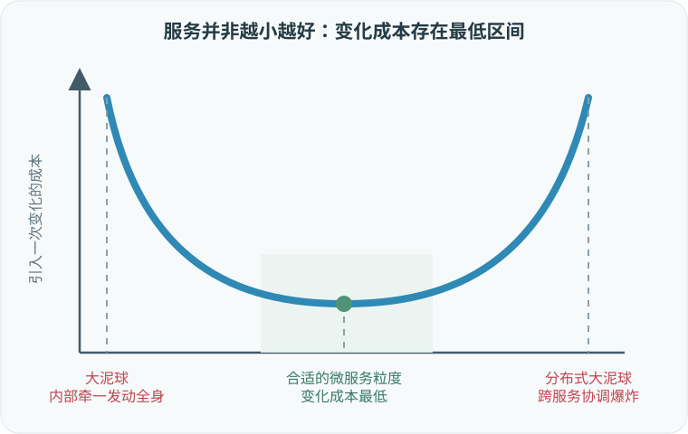
现在已经知道微服务是什么，接下来看看 DDD 怎样帮助我们找到深服务的边界。
和微服务一样，前面介绍的许多 DDD 模式都在讨论边界：限界上下文是模型的边界，子域限定一项业务能力，而聚合和值对象是事务边界。下面看看哪些边界适合用来界定微服务。
微服务与限界上下文有很多共同点，以至于两个模式经常被混用。它们真的一样吗？限界上下文边界是否与有效微服务的边界一致？
微服务和限界上下文都是物理边界。和限界上下文一样，一个微服务由一个团队拥有；彼此冲突的模型也不能被塞进同一个微服务，否则会形成复杂接口。微服务确实是限界上下文。但反过来也成立吗？能不能说每个限界上下文都是微服务？
第 3 章已经说明，限界上下文保护统一语言和模型的一致性。同一限界上下文里不能实现相互冲突的模型。假设你在开发广告管理系统，业务实体“潜在客户”（Lead）在“推广”和“销售”上下文中使用不同模型。因此，推广和销售必须是两个限界上下文，各自在自己的边界内只定义一个有效模型，如图 14-8 所示。原文随后把该实体写成 Campaign，与前文和图示不一致，此处按图示语义理解为 Lead。
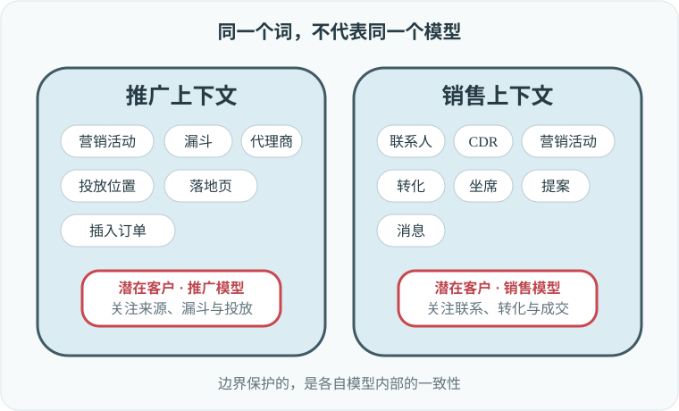
为简化讨论，假设除了“潜在客户”以外，系统里没有其他冲突模型。这样得到的限界上下文天然很宽，每个上下文都可以包含多个子域。只要子域不会引入冲突模型，它们就能从一个限界上下文移动到另一个上下文；图 14-9 中的多种拆分都是完全有效的限界上下文设计。
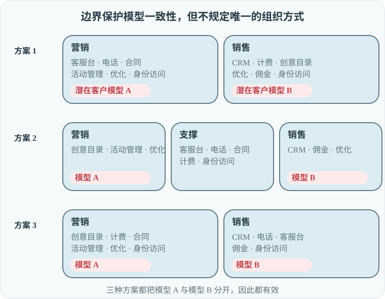
不同拆分可以适应不同要求，例如团队规模与结构、生命周期依赖等。但能否说这个例子中所有有效的限界上下文都必然是微服务？不能，尤其是方案 1 中两个限界上下文的功能都相当宽。
所以，微服务与限界上下文的关系并不对称。所有微服务都是限界上下文，但并非所有限界上下文都是微服务。限界上下文代表“最大有效单体”的边界。这样的单体不能与大泥球混为一谈：它是可行的设计选项，能够保护统一语言或业务领域模型的一致性。第 15 章还会看到，在某些情况下，这种宽边界比微服务更有效。
图 14-10 展示了限界上下文与微服务的关系。位于二者之间的区域是安全区，里面都是有效设计。如果系统没有被拆成正确的限界上下文，会形成大泥球；如果拆分越过微服务阈值，则会形成分布式大泥球。
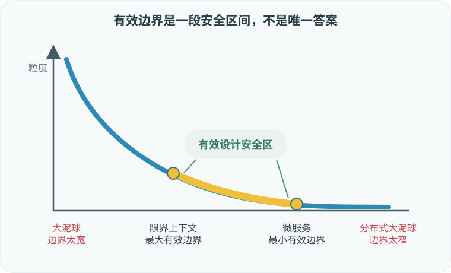
接下来看看另一个极端：聚合能否帮助我们找到微服务边界。
如果说限界上下文给出了最宽有效边界，那么聚合模式恰好相反：聚合边界是可能的最窄边界。把一个聚合拆成多个物理服务或限界上下文，不只是次优设计；正如附录 A 将展示的，它至少会带来许多不希望出现的后果。
和限界上下文一样，聚合边界也经常被用来驱动微服务边界。聚合是不可分割的业务功能单元，封装内部业务规则、不变量和逻辑的复杂度。但本章前面已经说明，微服务设计关注的不是孤立的单个服务。必须把服务放在它与系统其他组件的互动中考察：
聚合与子域其他业务实体的关系越强，它作为独立服务时就越浅。
确实存在“一个聚合一个服务”能产生模块化设计的情况。但更多时候，如此细粒度的服务会增加整个系统的全局复杂度。
设计微服务时，一个更平衡的启发式，是让服务与业务子域的边界对齐。第 1 章已经介绍，子域对应细粒度业务能力，是公司在业务领域中竞争所需的构件。从业务角度看，子域描述的是能力——业务“做什么”——而不是能力“怎样实现”。从技术角度看，子域代表一组相互连贯的用例：它们使用同一个业务领域模型，操作相同或紧密相关的数据，并具有强功能关系。一个用例的业务需求变化，很可能影响其他用例，如图 14-11 所示。
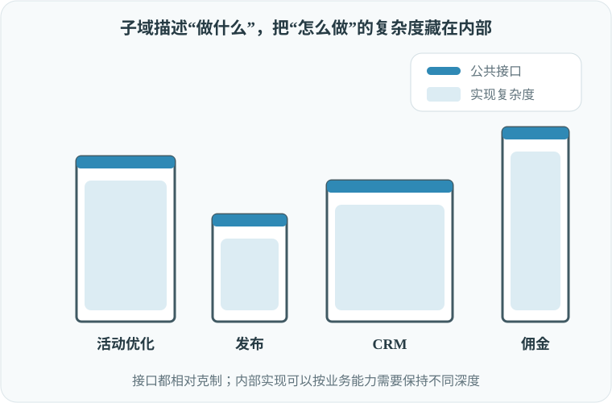
子域的粒度，以及对子域功能——“做什么”而不是“怎样做”——的关注，使其天然成为深模块。子域描述，也就是功能，封装了更复杂的实现细节，也就是逻辑。子域中用例彼此连贯，也保证了最终模块的深度。在很多情况下，把这些用例拆开反而会形成更复杂的公共接口，得到更浅的模块。所有这些特征，都使子域成为设计微服务时相对安全的边界。
让微服务与子域对齐是一条安全启发式，对大多数微服务都能产生较优方案。但也存在其他边界更有效的情况：例如保留在更宽的限界上下文语言边界中，或者因为非功能需求而把聚合作为微服务。解决方案不仅取决于业务领域，也取决于组织结构、业务战略和非功能需求。正如第 11 章所说，软件架构和设计必须持续适应环境变化。
除了帮助寻找服务边界，DDD 还能让服务变得更深。下面用开放主机服务和防腐层模式，说明怎样简化微服务的公共接口。
开放主机服务把限界上下文内部的业务领域模型，与用于集成其他系统组件的模型解耦，如图 14-12 所示。
引入面向集成的模型，也就是发布语言，可以降低系统的全局复杂度。第一，它允许服务实现独立演进而不影响消费者：新的实现模型仍然可以被翻译成现有发布语言。第二，发布语言只暴露更克制的模型。它围绕集成需要设计，封装消费者无须了解的实现复杂度。例如，它可以暴露更少的数据，并以更方便消费者使用的模型呈现。
在同一份实现逻辑之上提供更简单的公共接口，会让服务变得更“深”，也会带来更有效的微服务设计。
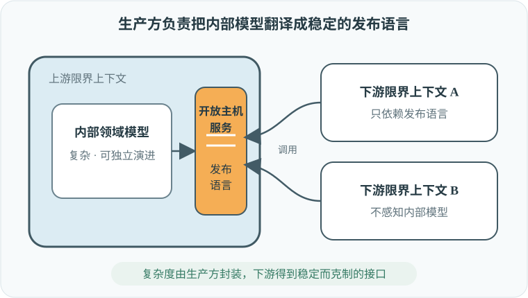
防腐层（ACL）模式从相反方向工作。它降低服务与其他限界上下文集成的复杂度。传统上，防腐层属于它所保护的限界上下文。不过正如第 9 章所讨论的，还可以再向前一步，把它实现成独立服务。
图 14-13 中的 ACL 服务同时降低了消费方限界上下文的局部复杂度和系统全局复杂度。消费方上下文的业务复杂度与集成复杂度分离，后者被卸载给 ACL 服务。消费方上下文使用更方便、面向集成的模型，因此公共接口得到压缩，不必反映生产方服务暴露的集成复杂度。
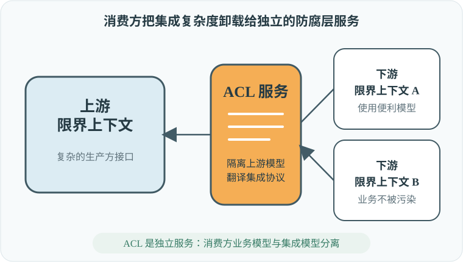
从历史上看，微服务架构与 DDD 联系极深，以至于“微服务”和“限界上下文”经常被混用。本章分析了二者的联系，也看到了它们并不相同。
所有微服务都是限界上下文，但并非所有限界上下文都是微服务。微服务定义了服务的最小有效边界；限界上下文保护其中模型的一致性，代表最大有效边界。边界比限界上下文更宽，会形成大泥球；边界比微服务更窄，则会形成分布式大泥球。
尽管如此，微服务与领域驱动设计的关系依然紧密。我们已经看到，怎样利用 DDD 工具设计有效的微服务边界。
第 15 章会从另一个角度继续讨论高层系统架构：通过事件驱动架构进行异步集成。我们将学习怎样利用不同类型的事件消息，进一步优化微服务边界。
从“微”究竟是什么开始，看看能不能自然走到最后的边界判断。
用一句话给出本章的核心定义。
不是代码行数、团队人数或部署包大小；真正要小的是公共接口暴露的领域知识与复杂度。
讲出八个方法拆成八个服务的反例，以及它暴露的矛盾。
每个服务局部变简单，但同一业务用例要跨更多服务协作；消息、顺序、失败和一致性成本上升。要同时计算局部复杂度和全局复杂度。
从“深服务”解释接口与内部能力的关系。
像“小前台、强后台”：用很小、稳定的接口，隐藏大量有价值的业务规则与实现复杂度。浅服务则几乎没有替调用者减少认知负担。
把聚合、限界上下文和子域放到同一张边界地图里。
聚合给出不可破坏事务不变量的最小安全边界；限界上下文给出模型和语言仍能保持一致的最大安全边界；子域通常是封装完整业务能力的平衡候选。
分别说明开放主机服务和防腐层由谁负责翻译。
开放主机服务由生产者发布稳定、精简的语言；防腐层由消费者隔离并翻译不合适的上游模型。两者都在减少跨边界需要理解的知识。
把前五步压成一个可以带走的判断原则。
不要追求物理尺寸最小，而要在聚合与限界上下文给出的安全区间内，用小接口封装完整能力，让服务内部复杂度 + 系统协作复杂度的总和尽可能低。
1. OASIS，《Reference Model for Service Oriented Architecture 1.0》，检索日期：2021 年 6 月 14 日。
本页按原章结构完整翻译。图 14-1 至图 14-13 均依据原图语义重绘并翻译图中文字；侧栏内容为阅读提示，不属于原文。